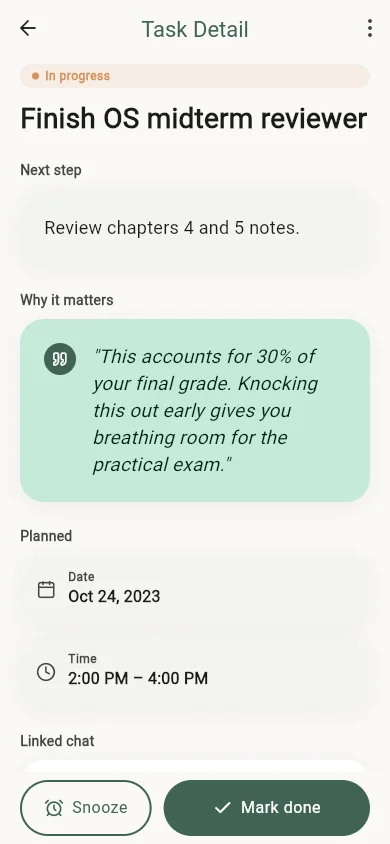

Project folio / 05 / Accountability tools
Sige
PurposeA mobile accountability coach that turns conversational guidance into a focused view of next actions.
- Role
- Solo mobile engineer
- Platform
- Mobile application
- Ownership
- Solo project designed and implemented by Jayrald.
- Stack
- Flutter · Supabase · FastAPI · Groq · FCM
 Tasks UI prototype
Tasks UI prototype
01
Problem
Connect a coaching conversation to practical follow-through without presenting unfinished product surfaces as shipped features.
A Flutter client uses Supabase and a FastAPI service to support the coaching conversation, with Groq generating responses and FCM available for notification delivery.
02
My contribution
Designed and built the Flutter coaching experience and its service-backed chat integration; designed Tasks and Insights as clearly labeled interface prototypes.
Ownership boundary. Solo project designed and implemented by Jayrald.
03
System view
-
Flutter client
Collects a message or quick reply in the coaching conversation.
-
FastAPI service
Receives the request and coordinates the service-backed response flow.
-
Groq integration
Generates the coaching response returned to the active conversation.
-
Accountability surfaces
Tasks and Insights demonstrate the intended follow-through as labeled UI prototypes.
04
Decision ledger
| Decision | Why | Tradeoff |
|---|---|---|
| Keep the coaching exchange inside the active conversation. | Quick replies and generated responses need immediate context to feel actionable rather than detached. | The usefulness of the experience depends on service availability and careful response handling. |
| Label Tasks and Insights as UI prototypes. | Their interface direction can be shown without implying that unfinished service behavior is live. | The demonstration is intentionally narrower than the planned product surface. |
05
Workflow record
Tasks UI prototype captured from the Flutter project. This locally isolated sequence demonstrates the intended task list, detail, and completion states; it is not connected to a live task backend.
-
01 / 03
Review the planned next actions in the Tasks UI prototype.
Tasks UI prototype — the list organizes next actions by status and exposes the next concrete step for each item. -
02 / 03
Open a prototype task detail.

Open the prototype detail — rationale, schedule, and completion action are composed as one focused accountability surface. -
03 / 03
Mark the prototype task done and review its completion state.

Mark the prototype task done — the completion state acknowledges progress, records focused time, and offers a clear next step.
06
Stack index
- Product surface
- Mobile application
- Implementation
- Flutter · Supabase · FastAPI · Groq · FCM
07
Repository disclosure
Public solo repository. The chat integration is implemented; Tasks and Insights are presented as UI prototypes, not completed live features.
Open source repository